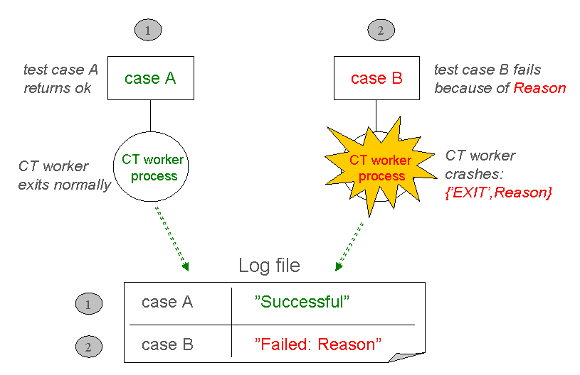
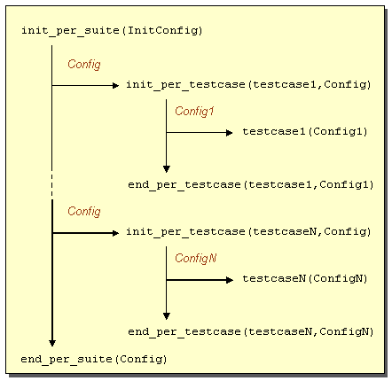

View Source Getting Started
Introduction for Newcomers
The purpose of this section is to let the newcomer get started in quickly writing and executing some first simple tests with a "learning by example" approach. Most explanations are left for later sections. If you are not much into "learning by example" and prefer more technical details, go ahead and skip to the next section.
This section demonstrates how simple it is to write a basic (yet for many module testing purposes, often sufficiently complex) test suite and execute its test cases. This is not necessarily obvious when you read the remaining sections in this User's Guide.
Note
To understand what is discussed and examplified here, we recommended you to first read section Common Test Basics.
Test Case Execution
Execution of test cases is handled as follows:

For each test case that Common Test is ordered to execute, it spawns a
dedicated process on which the test case function starts running. (In parallel
to the test case process, an idle waiting timer process is started, which is
linked to the test case process. If the timer process runs out of waiting time,
it sends an exit signal to terminate the test case process. This is called a
timetrap).
In scenario 1, the test case process terminates normally after case A has
finished executing its test code without detecting any errors. The test case
function returns a value and Common Test logs the test case as successful.
In scenario 2, an error is detected during test case B execution. This causes
the test case B function to generate an exception and, as a result, the test
case process exits with reason other than normal. Common Test logs this as an
unsuccessful (Failed) test case.
As you can understand from the illustration, Common Test requires a test case
to generate a runtime error to indicate failure (for example, by causing a bad
match error or by calling exit/1, preferably through the help
function ct:fail/1,2). A successful execution is indicated by a
normal return from the test case function.
A Simple Test Suite
As shown in section Common Test Basics, the test suite module implements callback functions (mandatory or optional) for various purposes, for example:
- Init/end configuration function for the test suite
- Init/end configuration function for a test case
- Init/end configuration function for a test case group
- Test cases
The configuration functions are optional. The following example is a test suite
without configuration functions, including one simple test case, to check that
module mymod exists (that is, can be successfully loaded by the code server):
-module(my1st_SUITE).
-compile(export_all).
all() ->
[mod_exists].
mod_exists(_) ->
{module,mymod} = code:load_file(mymod).If the operation fails, a bad match error occurs that terminates the test case.
A Test Suite with Configuration Functions
If you need to perform configuration operations to run your test, you can
implement configuration functions in your suite. The result from a configuration
function is configuration data, or Config. This is a list of key-value tuples
that get passed from the configuration function to the test cases (possibly
through configuration functions on "lower level"). The data flow looks as
follows:

The following example shows a test suite that uses configuration functions to open and close a log file for the test cases (an operation that is unnecessary and irrelevant to perform by each test case):
-module(check_log_SUITE).
-export([all/0, init_per_suite/1, end_per_suite/1]).
-export([check_restart_result/1, check_no_errors/1]).
-define(value(Key,Config), proplists:get_value(Key,Config)).
all() -> [check_restart_result, check_no_errors].
init_per_suite(InitConfigData) ->
[{logref,open_log()} | InitConfigData].
end_per_suite(ConfigData) ->
close_log(?value(logref, ConfigData)).
check_restart_result(ConfigData) ->
TestData = read_log(restart, ?value(logref, ConfigData)),
{match,_Line} = search_for("restart successful", TestData).
check_no_errors(ConfigData) ->
TestData = read_log(all, ?value(logref, ConfigData)),
case search_for("error", TestData) of
{match,Line} -> ct:fail({error_found_in_log,Line});
nomatch -> ok
end.The test cases verify, by parsing a log file, that our SUT has performed a successful restart and that no unexpected errors are printed.
To execute the test cases in the recent test suite, type the following on the UNIX/Linux command line (assuming that the suite module is in the current working directory):
$ ct_run -dir .or:
$ ct_run -suite check_log_SUITETo use the Erlang shell to run our test, you can evaluate the following call:
1> ct:run_test([{dir, "."}]).or:
1> ct:run_test([{suite, "check_log_SUITE"}]).The result from running the test is printed in log files in HTML format (stored in unique log directories on a different level). The following illustration shows the log file structure:

Questions and Answers
Here follows some questions that you might have after reading this section with corresponding tips and links to the answers:
Question: "How and where can I specify variable data for my tests that must not be hard-coded in the test suites (such as hostnames, addresses, and user login data)?"
Answer: See section External Configuration Data.
Question: "Is there a way to declare different tests and run them in one session without having to write my own scripts? Also, can such declarations be used for regression testing?"
Answer: See section Test Specifications in section Running Tests and Analyzing Results.
Question: "Can test cases and/or test runs be automatically repeated?"
Answer: Learn more about Test Case Groups and read about start flags/options in section Running Tests and in the Reference Manual.
Question: "Does
Common Testexecute my test cases in sequence or in parallel?"Answer: See Test Case Groups in section Writing Test Suites.
Question: "What is the syntax for timetraps (mentioned earlier), and how do I set them?"
Answer: This is explained in the Timetrap Time-Outs part of section Writing Test Suites.
Question: "What functions are available for logging and printing?"
Answer: See Logging in section Writing Test Suites.
Question: "I need data files for my tests. Where do I store them preferably?"
Answer: See Data and Private Directories.
Question: "Can I start with a test suite example, please?"
Answer: Welcome!
You probably want to get started on your own first test suites now, while at the
same time digging deeper into the Common Test User's Guide and Reference
Manual. There are much more to learn about the things that have been introduced
in this section. There are also many other useful features to learn, so please
continue to the other sections and have fun.